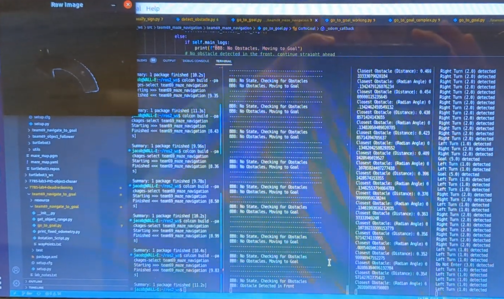

Autonomous Maze Navigation Robot

This project served as the final capstone for a Robotics Research course during my M.S. program at Georgia Tech. The objective was to autonomously navigate a maze environment using a TurtleBot equipped with odometry, LiDAR sensing, and onboard computer vision.
The system was implemented in Python using ROS2 and designed around three custom ROS nodes responsible for perception, sign recognition, and autonomous decision-making.
1. Detect Obstacle NodeThis node performs real-time obstacle detection using LiDAR scan data, estimating both the distance and orientation of nearby objects relative to the robot. It computes the closest obstacle as well as directional range measurements (front, right, back, and left) to support safe navigation.
To improve robustness, the node applies weighted average filtering to reduce noise in the raw range readings. It subscribes
to the /scan topic and publishes a Float64MultiArray message on /range_data, containing
ten values representing obstacle distances and angles across key directions.
This node enables semantic understanding of the maze by classifying directional signs using a custom-trained K-Nearest Neighbors (KNN) image classifier. Images are captured from the TurtleBot’s Raspberry Pi camera and processed in real time.
The node subscribes to /camera/image/compressed and performs a full preprocessing pipeline before inference, including:
(color masking → erosion for noise removal → dilation for gap filling → region-of-interest cropping → resizing to model input dimensions)
After preprocessing, the classifier outputs one of the maze sign categories and publishes the result to the
/sign_class topic. The recognized classes include:
(0 = Empty Wall, 1 = Left Turn, 2 = Right Turn, 3 = Do Not Enter, 4 = Stop, 5 = Goal).

This node serves as the core navigation and control module, integrating obstacle proximity data, sign classification results, and robot odometry to autonomously traverse the maze.
It subscribes to the /range_data topic to detect frontal obstacles and determine when decision-making is required.
It also uses the TurtleBot’s /odom feedback to execute precise motion primitives such as left turns, right turns,
and turn-arounds.
By computing the angular difference between the robot’s initial heading and its current odometry orientation, the node accurately
measures rotation progress during each maneuver. When an obstacle is detected, the node queries the current sign classification
from /sign_class and selects the appropriate navigation behavior.
Finally, the node publishes velocity commands to /cmd_vel, enabling closed-loop autonomous movement through the maze environment.
Overall, this project represented the culmination of a semester of applied robotics research, combining classical perception methods, machine learning-based sign recognition, and sensor-driven control. The final ROS2 system successfully demonstrated fully autonomous maze navigation through the integration of LiDAR sensing, vision-based decision-making, and odometry feedback.
Technical Highlights- ROS2 node-based architecture and inter-node communication
- Autonomous mobile robot navigation and control
- LiDAR perception and obstacle avoidance algorithms
- Odometry-based motion estimation and turn control
- Classical computer vision preprocessing (masking, morphology, ROI extraction)
- Machine learning classification using K-Nearest Neighbors (KNN)
- Sensor fusion for decision-making in structured environments
- Python robotics development and real-time topic-based inference
Current Location
North of Atlanta, GAUnited States of America